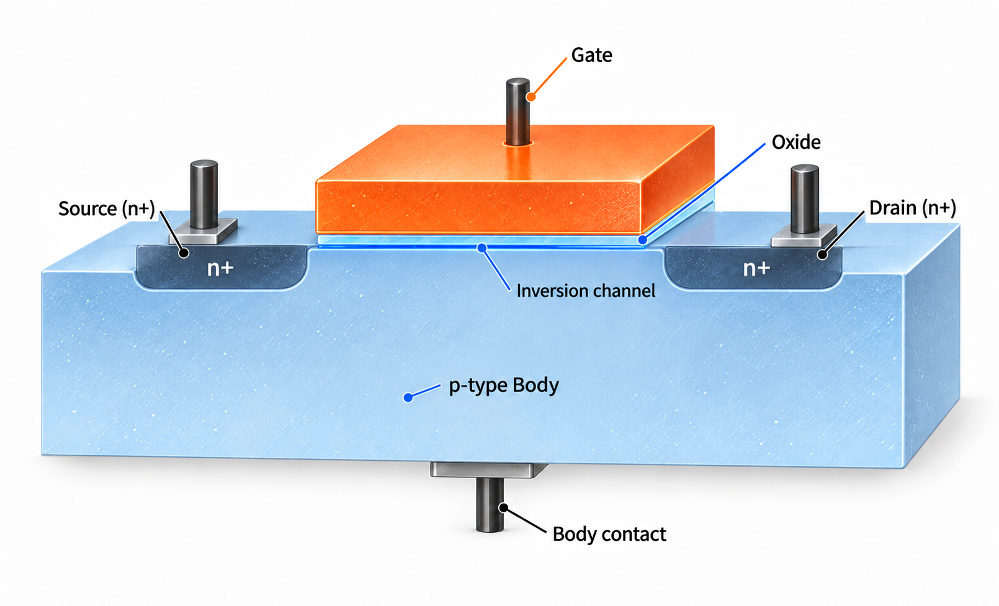
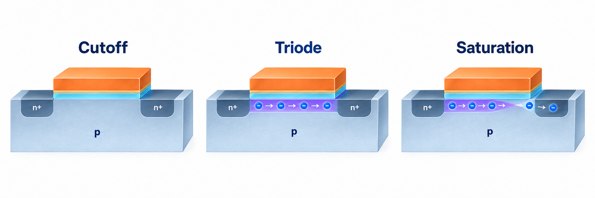
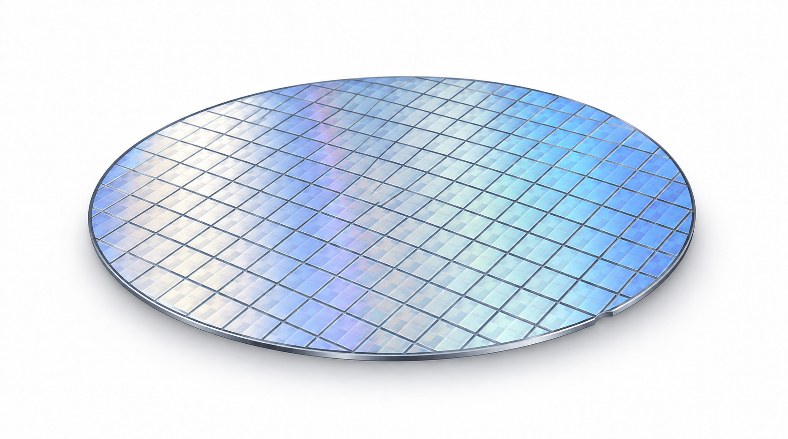
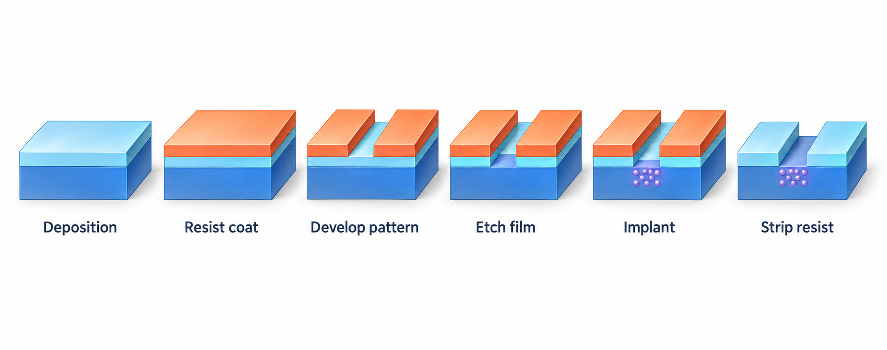
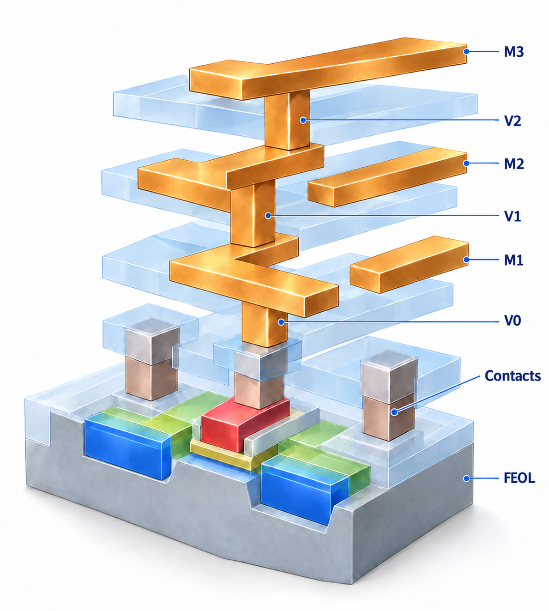
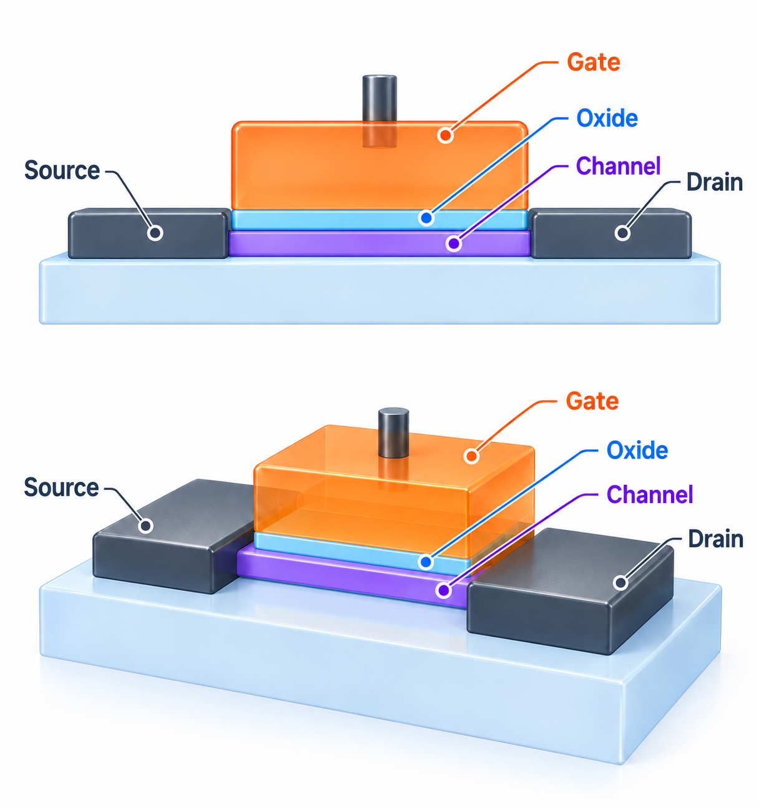
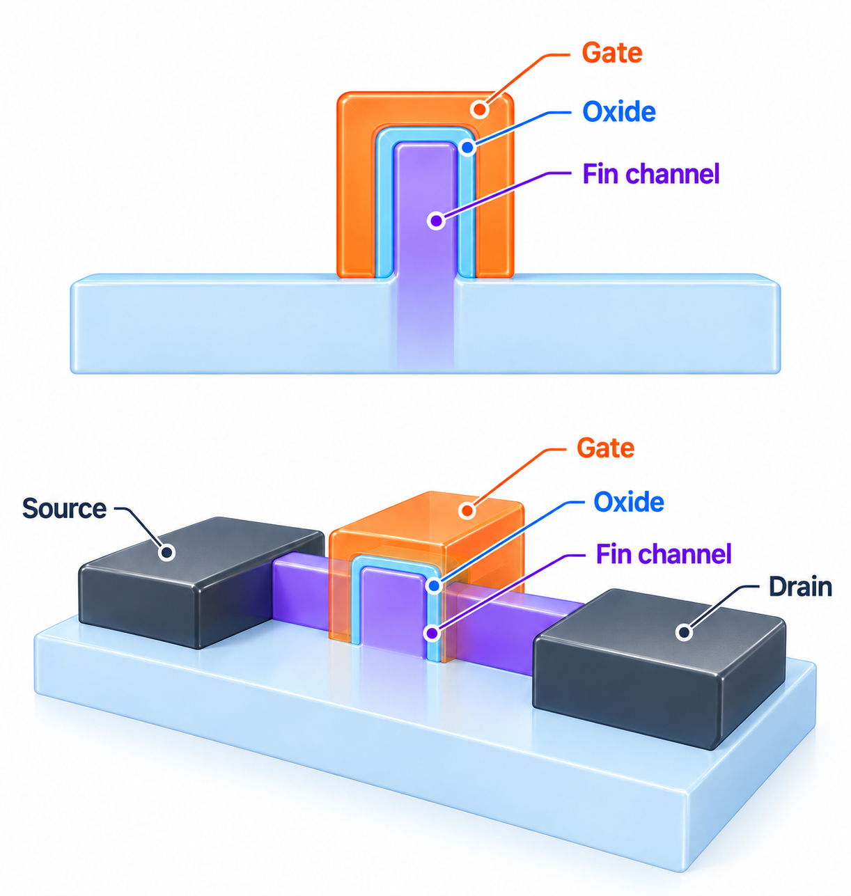
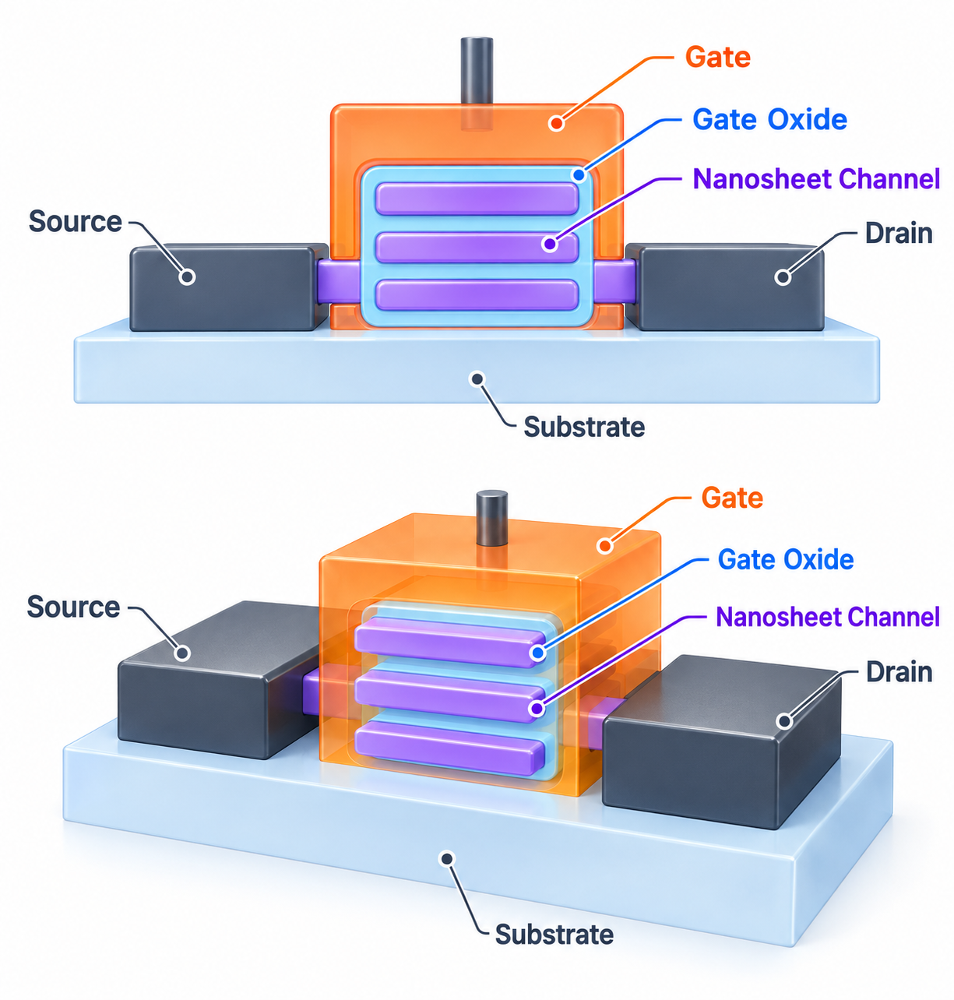

300 K, 완전 이온화, 저주입·비축퇴 평형을 가정합니다. Substrate geometry, 고농도 band-gap narrowing, tunneling과 breakdown을 계산하는 소자 simulator가 아닙니다. MIT PN junction 강의 자료
주요 개념 정리
개념
의미
Doping
평형 carrier 농도를 바꿈
Drift
전기장에 의한 carrier 이동
Diffusion
농도 차이에 의한 carrier 이동
Depletion
이동 carrier 감소 · 고정 공간 전하 존재
Built-in potential
평형 접합 내부의 전위 변화
순방향·역방향 bias의 효과
항목
순방향 · P 쪽 양전압
역방향 · P 쪽 음전압
접합 장벽
낮아짐
높아짐
공핍 폭
단순 모델에서 감소
증가
주입
증가
주입 억제
전류 관측
주입·확산 전류 증가
누설 및 높은 전계의 breakdown 조건
해석 범위
전압·온도·주입 수준 확인
항복과 누설의 별도 model 필요
위 그래프는 V=0의 평형 상태입니다. 외부 bias를 걸면 quasi-Fermi level과 carrier 주입까지 고려해야 합니다.
12-2. MOS 구조와 동작
MOS 구조와 기본 개념
MOSFET은 gate 전압으로 channel 전하를 조절해 source와 drain 사이의 전류를 제어합니다. 아래는 p-type body의 NMOS로, 충분한 양의 VGS가 전자 inversion channel을 만들 수 있습니다.

이 예제는 Source와 Body를 0 V에 두고 VDS≥0을 사용합니다. Oxide는 gate와 channel을 절연하며 전기장으로 channel 전하를 제어합니다.
항목
NMOS
PMOS
다수 channel carrier
전자
정공
대표 turn-on 조건
VGS > Vth,n
VSG > |Vth,p|
표시한 기호
Body 별도 4단자
Body 별도 4단자
Body 화살표
Body → channel
Channel → body
동작 영역별 channel 상태
영역은 VGS와 VDS의 관계로 정합니다. Gate가 켜졌다는 디지털 표현을 analog saturation 영역과 같은 뜻으로 사용하지 않습니다.

Cutoff
VGS≤Vth. 이 단순 모델은 inversion current를 0으로 두며 실제 subthreshold leakage는 제외합니다.
Triode
VGS>Vth, 0≤VDS<VGS−Vth. Source에서 drain까지 이어진 channel의 전압에 따라 전류가 변합니다.
Saturation
VGS>Vth, VDS≥VGS−Vth. Drain 쪽 pinch-off가 생겨도 전류는 계속 흐릅니다.
입체 그림의 화살표는 전자의 source→drain 이동입니다. 관습적인 NMOS drain current ID 방향은 반대인 drain→source입니다.
전달 특성과 출력 특성
장채널 square-law 모델을 사용합니다. 전달 곡선은 선택한 VDS를 고정해 VGS를 바꾸고, 출력 곡선은 세 VGS 값에서 VDS를 바꿉니다. 붉은 점은 현재 입력 조건입니다.
ID–VGS · 고정된 VDS
ID–VDS · VGS별 비교
Triode: ID = β[(VGS−Vth)VDS − VDS²/2] Saturation: ID = β(VGS−Vth)²/2
Body effect, channel-length modulation, subthreshold, velocity saturation을 제외합니다. 실제 FinFET/GAA compact model을 대체하지 않습니다. 전달 곡선의 영역 역시 고정된 VDS와 함께 판정합니다. MIT MOSFET large-signal model
12-3. 공정의 기본 순서
전체 공정 흐름 개요
반도체 제조는 여러 박막을 형성하고 lithography로 패턴을 정의한 뒤 etch와 다른 공정으로 구조에 전달합니다. Implant와 열처리는 doping profile과 결함 상태에 영향을 줍니다.
여기서는 한 번의 패턴 형성 순서를 예로 듭니다. 실제 CMOS 공정은 세정·증착·노광·식각·열처리·평탄화를 반복하며, 이 여섯 장면이 전체 제조 recipe는 아닙니다.

공정 단계별 단면 구조
1
절연막 증착
Deposition
2
감광막 도포
Resist coat
3
노광과 현상
Develop pattern
4
막 식각
Etch film
5
이온 주입 · 선택
Implant
6
감광막 제거
Strip resist

후속 공정의 바탕이 되는 막을 형성합니다.
Wafer 위에 photoresist를 도포합니다.
노광 조건에 따라 감광막에 열린 패턴을 만듭니다.
열린 감광막 패턴을 아래 막으로 전달합니다.
노출한 영역에 dopant를 주입하는 예입니다.
감광막을 제거하고 형성된 패턴을 남깁니다.
파랑은 기판 / 막, 주황은 resist, 보라색 점은 주입한 dopant의 개념 표현입니다. Etch 뒤 열린 막과 implant 위치를 같은 패턴으로 이어서 봅니다. Implant activation을 위한 열처리 등은 별도 공정입니다.
공정 목적과 남는 구조
단계
목적
재료 / 수단 예
확인할 결과
절연막 증착
후속 공정의 막 형성
SiO₂, SiN 계열 등
두께·균일도·결함
감광막 도포
노광할 감광층 형성
Photoresist
도포 두께·표면 상태
노광 / 현상
Mask 패턴을 resist에 전사
광원·mask·현상액
CD·overlay·패턴 잔류
Etch
막에 패턴 전달
건식 / 습식 식각
선택비·형상·잔류막
Implant
Doping profile 형성
B / P / As 등 ion
Dose·energy·손상과 activation
Resist 제거
임시 mask 제거
Plasma / wet strip
잔류물·하부 재료 손상
구조와 결함을 연결해 읽기
Lithography는 패턴을 정의하고 etch가 특정 layer에 전달합니다.
매 단계에서 어떤 재료가 남고 어떤 재료가 제거되는지 확인합니다.
노광을 최종 소자 형상을 직접 깎는 단계로 혼동하지 않습니다.
공정의 목적과 관측할 결함을 함께 기록합니다.
12-4. FEOL과 BEOL
FEOL 소자와 BEOL 배선의 수직 구조
FEOL은 소자와 접합을 형성하고, contact와 여러 metal / via layer가 회로 연결을 만듭니다. 층 수와 재료 명칭은 공정마다 다릅니다.

그림의 V0는 contact 위 첫 배선 연결을 설명하는 명칭입니다. PDK마다 local interconnect와 contact / via 이름이 달라 실제 layer map을 확인합니다.
다층 metal 배선의 평면 경로
같은 net이 M1, V1, M2, V2, M3를 거쳐 다른 cell에 연결되는 예입니다. 서로 다른 layer가 평면에서 겹쳐 보여도 via가 없으면 연결되지 않습니다.
M1M2M3ViaContact
오른쪽 색은 routing layer 구분용이며 왼쪽 입체도의 금속 재료 색과 일대일 대응하지 않습니다.
공정 층의 종류와 기능
구분
층
기능 / 공정 의존성
FEOL
Well / active / isolation
Body·소자 영역·소자 사이 격리
FEOL
Gate / dielectric / spacer
Channel 제어·절연·측면 구조
FEOL
Source / drain
Doping·접합·contact 경계
연결
Contact / local interconnect
소자 terminal과 첫 routing layer 연결
BEOL
Metal 1…N
회로·전원·clock 배선
BEOL
Via 1…N
인접 metal layer 연결
BEOL
Inter-layer dielectric
금속 사이 절연·기생 capacitance
SiO₂, high-k, SiN 계열 절연막과 Al/Cu/W/Co 계열 도체의 사용은 공정·layer·세대에 따라 달라집니다. 단일 재료 표를 모든 PDK에 적용하지 않습니다.
RC 시간 응답
배선의 저항과 부하 capacitance를 1차 RC로 축약한 step 응답입니다. Logical 연결이 같아도 길이, 폭, via와 주변 net이 달라지면 delay·noise·전력·신뢰성 조건이 달라집니다.
Vout(t) = Vstep · (1 − e−t/RC) · τ = R·C
기본 1 kΩ × 100 fF = 100 ps입니다. 이 집중 모델은 분포 RC, coupling, driver 비선형성과 inductance를 제외합니다. Physical signoff에서 배선을 이상적인 0 Ω로 유지하지 않습니다.
12-5. Planar와 FinFET 및 GAA
구조 비교 · Planar, FinFET, GAA
Gate가 channel을 감싸는 형상이 달라지면 electrostatic control과 geometry 제약도 달라집니다. 각 열은 단면과 같은 구조의 입체 형상을 함께 보여 줍니다.
Planar MOSFET
평면 표면의 channel을 상면 gate로 제어합니다.

FinFET
Fin의 상면과 양측면에 gate가 걸쳐 있습니다.

GAA nanosheet
Gate가 각 nanosheet channel 둘레를 감쌉니다.

주황: gate · 파랑: gate dielectric · 보라: channel · 어두운 회색: source / drain. 색·두께·방향은 설명용이며 실제 제조 치수나 process-node 규격이 아닙니다.
전기적 제어와 구조를 비교하는 기준
항목
Planar
FinFET
GAA
Channel 형상
평면 표면
돌출 fin
Nanosheet / nanowire
Gate가 보는 면
주로 상면
상면과 측면
Channel 둘레
설계 geometry
W / L
Fin 수·높이·폭
Sheet 수·폭·두께
전기적 제어
공정과 geometry에 의존
여러 면의 gate 제어 활용
주변을 감싸는 gate 제어 활용
추가 조건
Body·junction·SCE
Contact·parasitic·thermal
Release·spacer·contact·thermal
회로 비교
같은 function·VDD·load·library 조건으로 비교
동일 조건의 compact model 사용
동일 조건의 compact model 사용
여러 면을 감싼 구조가 electrostatic control에 이점을 줄 수 있어도 모든 회로의 leakage·delay·cost가 같은 비율로 개선되는 것은 아닙니다. 노드 숫자를 하나의 물리 치수로 해석하지 않습니다.
선택한 구조와 회로 model의 경계
회로 해석은 PDK의 compact model과 기생 성분을 사용합니다. 입체 모양 자체가 SPICE model이 되지는 않습니다.
12-6. 공정 변동과 소자 모델
트랜지스터의 주요 공정 변수
패턴과 재료 형성의 편차는 gate length, dielectric thickness, threshold와 mobility·저항 등의 분포에 영향을 줍니다.
ΔLg · gate length
Lithography·etch와 geometry 편차
Δtox · dielectric
두께·유전율·계면 상태의 편차
ΔVth · threshold
Work function·doping·계면 전하 등의 영향
Parameter 분포와 corner 곡선
분포의 모양·분산·상관관계는 측정과 model에 의해 정의됩니다. 아래 Gaussian과 I–V 곡선은 구분을 위한 가상 예입니다.